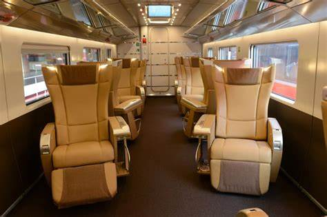

Classe Affaire

Découvrez l’espace privilégié, intime et harmonieux de la cabine Business sur nos vols long-courriers.
Confort à bord
Tout au long de votre voyage, la cabine Business vous garantit intimité, confort et bien-être. Votre espace personnel se fait pluriel pour vous. Il est à la fois un bureau, un restaurant, une salle de cinéma, une chambre à coucher... À vous de le composer, au fil de vos envies.
Profitez pleinement de votre fauteuil Business, au design contemporain et à l'élégance discrète. Envie de vous reposer, de dormir ou de travailler ? Réglez intuitivement la position idéale.
business seat
Nos nouveaux fauteuils Business, actuellement en déploiement sur l'ensemble de notre réseau, illustrent notre vision du voyage :
un lit en position parfaitement horizontale,
un accès direct à l'allée en totale liberté (sauf sur nos avions A330),
un espace complet en toute intimité (bureau, table de restaurant, lit).
Plaisirs de la table
En cabine Business, la table est généreuse. Découvrez la carte imaginée par de grands chefs étoilés ainsi que les prestigieux vins français qui l'accompagnent.
Plateau repas long-courrier en Business
Notre offre de restauration
Vos divertissements en grand écran
Choisir et s'évader... Effleurez votre grand écran tactile haute définition et transformez votre espace en salon de divertissements : classiques du cinéma, blockbusters, films du monde en version originale, concerts, documentaires, musique... Cette programmation est une invitation à la détente et au plaisir. L'évasion commence à bord !
tablette77748J
Découvrir la programmation
De délicates attentions
Nous prenons soin de vous. Après votre installation à bord, notre équipage vous offre une élégante trousse de confort comprenant des produits cosmétiques, un masque de sommeil doux et ajustable, une brosse à dents et son dentifrice.
Pour réduire notre empreinte environnementale, nous avons remplacé l'emballage plastique de nos trousses par un témoin d'intégrité.
trousse clarins.
- toilette moderne vip
- bloc individuel
- wifi gratuit
- climatisation